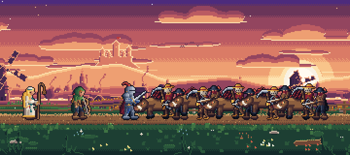
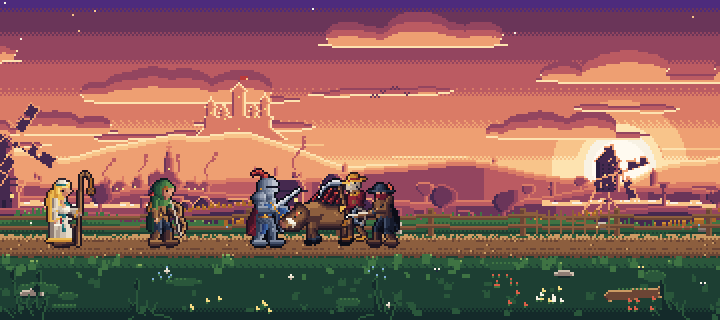
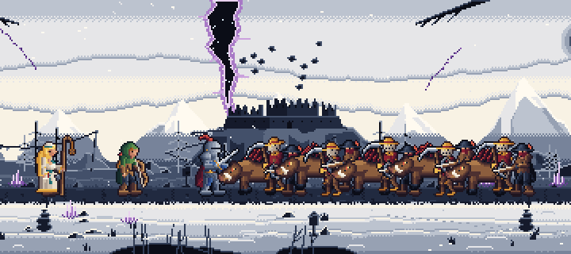

Izquierda, la de ahora: una columna de luz cada 15 px a lo ancho de la oleada y una estrella en cada enemigo — con una oleada llena salen 12 columnas y 15 estrellas a la vez. Derecha, la nueva: una sola cosa que crece.

AhoraNueva
Cómo va, paso a paso (a un tercio de velocidad)
Se enciende. Mientras la sacerdotisa alza el bastón, un destello aparece en el cielo sobre el centro de la oleada y se abre en una estrella de ocho rayos que gira.
Cae. Cuando clava el bastón, la estrella se desploma (cada vez más rápida, con una estela de luz detrás) y toca el suelo justo en su golpe.
Estalla. Un fogonazo blanco y una cúpula de luz que se hincha y se rompe en rayos y motas.
La nova. Un anillo plano de luz se abre en el suelo bajo la oleada; sus bordes siguen corriendo por el suelo hasta los dos extremos de la oleada, sea del ancho que sea.
Cada enemigo, una vez. Cuando el borde pasa bajo un enemigo, un destello pequeño a sus pies y unas motas que suben (y el parpadeo rojizo de golpe que ya tiene el juego). Nada de estrellas ni columnas: en fila parecían números.
Con pocos enemigos y en Tormento
Con una oleada corta el anillo ya la cubre y los bordes no salen. En Tormento (mundo 5, cielo claro) el borde oscuro de la luz la mantiene legible.

Tres enemigos

Mundo 5, Tormento
Las piezas, fotograma a fotograma (×3)
De arriba abajo: la estrella que se enciende · la estrella girando · la caída · el impacto · el anillo en el suelo · el borde que corre (se refleja para el lado izquierdo) · el toque en cada enemigo.